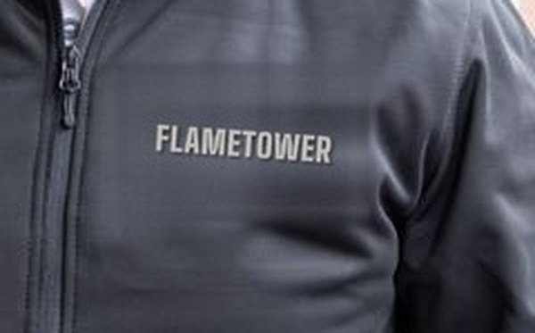
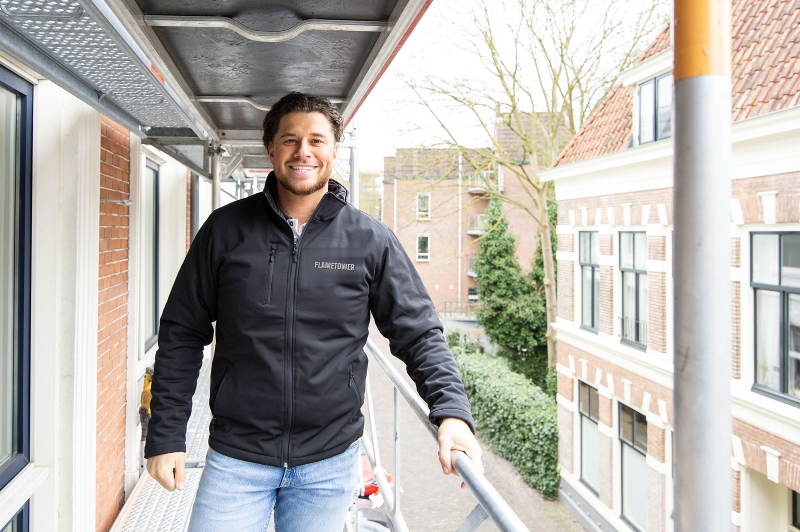
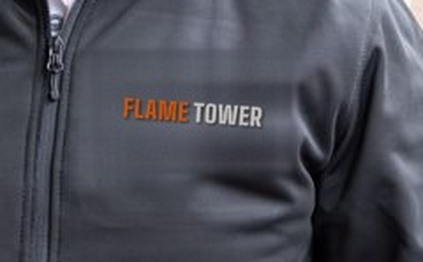
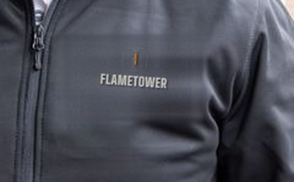
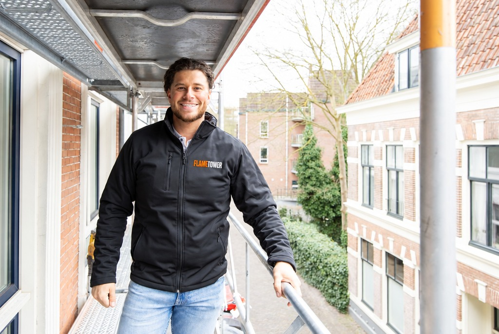
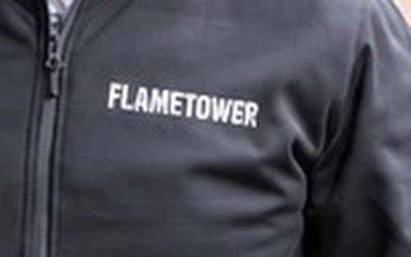
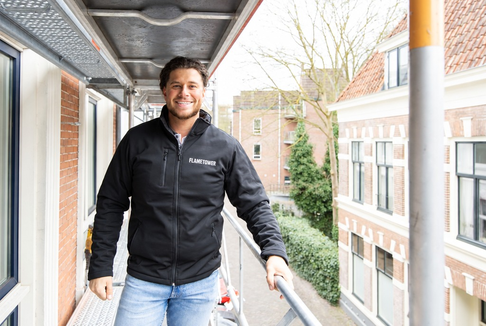
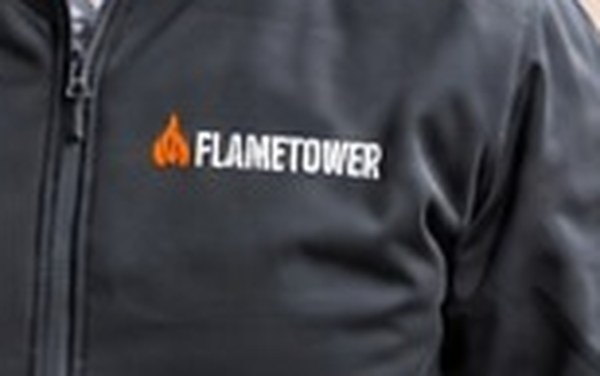
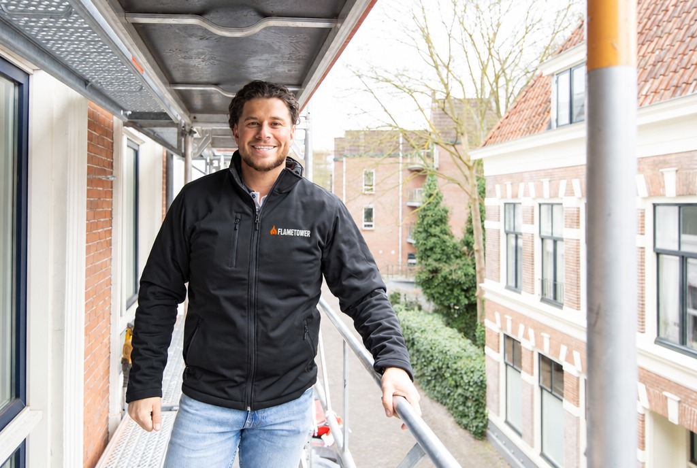

1


Zelf bewerkt · wit
Bovenaan elke kaart het logo van dichtbij, daaronder de hele foto. 1 t/m 4 heb ik zelf bewerkt: gezicht en foto zijn 100% het origineel, het logo is er bewerkt opgezet. 5 t/m 7 zijn met AI gemaakt: het borduursel oogt echter, maar de foto is iets zachter (1024 px) en het gezicht is door AI opnieuw opgebouwd. Klik op een foto om hem groot te zien (met pijltjes blader je verder). Laat weten welk nummer.


Zelf bewerkt · wit

Zelf bewerkt · oranje + wit

Zelf bewerkt · met icoon
Zelf bewerkt · icoon + oranje

AI · oranje + wit borduursel


AI · wit borduursel


AI · vlam-icoon + wit